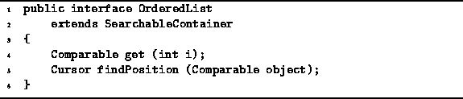
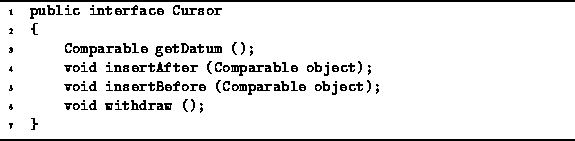

Data Structures and Algorithms
with Object-Oriented Design Patterns in Java
Data Structures and Algorithms
with Object-Oriented Design Patterns in JavaAn ordered list is a list in which the order of the items is significant. However, the items in an ordered lists are not necessarily sorted. Consequently, it is possible to change the order of items and still have a valid ordered list.
Program  defines the OrderedList interface.
The OrderedList interface extends
the SearchableContainer interface
defined in Program .
Recall that a searchable container is a container
that supports the following additional operations:
defines the OrderedList interface.
The OrderedList interface extends
the SearchableContainer interface
defined in Program .
Recall that a searchable container is a container
that supports the following additional operations:

Program: OrderedList interface.
The OrderedList interface adds the following methods:
The findPosition method of the the List interface
takes a Comparable object and searches the list
for an object that matches the given one.
The return value is a Cursor.
Program defines the Cursor interface.

Program: Cursor interface.
A cursor ``remembers'' the position of an item in a list.
The Program interface given in Program
defines the following methods:
As we did in the previous chapter with stacks, queues, and deques,
we will examine two ordered list implementations--an array-based one and a linked-list one.
Section presents an array version of ordered lists;
Section ,
an implementation using on the LinkedList class.
 Copyright © 1998 by Bruno R. Preiss, P.Eng. All rights reserved.
Copyright © 1998 by Bruno R. Preiss, P.Eng. All rights reserved.